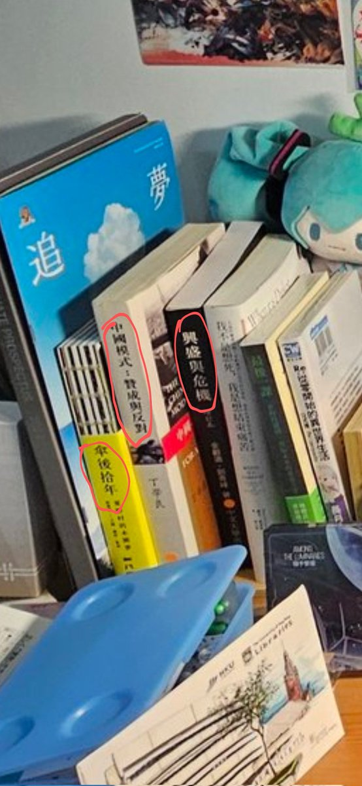

RedFox（2代目）🏳️⚧️🇭🇰🇲🇴
@FoxRed695449
@Aesiayde @zhao_mama 還有，我要是真為中國社會正名，桌子上就不會放這些政治類書籍了

Ashbridges\
@Aesiayde
@FoxRed695449 @zhao_mama 特别有一种华春莹说自己也是14亿分之一自己也没有受压迫的美
先不谈香港在文化上到底更接近支那还是西方，不觉得这种抛开文化差异和总体情况而只把个例拿出来想要为中国社会现状正名的行为和嘴脸不仅不科学严谨而且令人作呕吗
写了一整篇小作文对别人的态度挑三拣四只会让你看起来很蠢